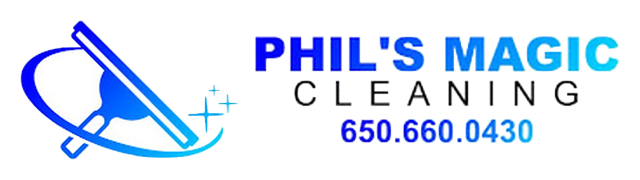
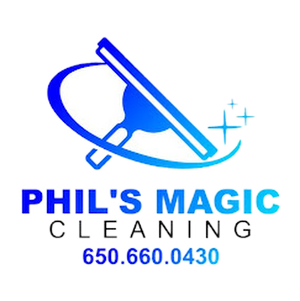

Brand system · v0.1 · draft for E.L. review · 2026-10-05
The brand system for the AEO rebuild, taken from Phil's real logo file. The logo colors were sampled from its pixels, not guessed. One rule comes from E.L. (10/5): the action button stays teal. Everything else follows the logo.
Use the original file only. Never redraw, recolor or retype the wordmark.


Gap: there is no white or reversed version of the logo. If the new site uses a dark footer, we need a one-color white version. That means a request to Phil for his original artwork, or a vector redraw he approves.
The correction found 10/5: the logo gradient doesn't stop at #0064FF. It runs from pure blue through bright blue and sky to an aqua tip on the final "C". That aqua end is why the teal action button sits comfortably beside the logo.
Teal means one thing: "do this now", as in Get a quote or Book. Keeping it to buttons is what makes the button the most visible thing on the page. Links and the phone number use Magic Blue instead.
| Pairing | Ratio | Use it for |
|---|---|---|
White on Action Teal #0D7A8A | 5.04 | ✓ button labels |
White on Teal hover #0A6370 | 6.93 | ✓ button labels |
Magic Blue #0000FF on white | 8.59 | ✓ links, phone, headings |
Bright Blue #0064FF on white | 4.92 | ✓ large text only, by preference |
| Ink on white | ~18 | ✓ body text |
Sky #04B8F7 on white | ~2.3 | ✗ never for text, decorative only |
| Magic Blue on black | 2.44 | ✗ never (also why the logo can't sit on black) |
The logo pairs a heavy, wide, all-caps sans ("PHIL'S MAGIC") with a light, widely-spaced caps line ("CLEANING"). The web type below echoes that structure.
Eyebrow · Archivo 400 · caps · tracking .32em
Source Sans 3 400 for body text. Pure-water window cleaning for homes and storefronts across the Peninsula, from South San Francisco to Mountain View.
| Role | Font | Why |
|---|---|---|
| Display / H1–H2 | Archivo 800–900 | Closest free web match to the logo's heavy grotesque; makes headings feel like the logo |
| Eyebrow / labels | Archivo 400, caps, wide tracking | Echoes the "C L E A N I N G" line |
| Body | Source Sans 3 400/600 | Already on the live site; clear at small sizes |
Your decision: the live site uses Playfair Display, an elegant serif, for headings. It has nothing in common with the logo, and it came from the earlier teal design (D-4). This system replaces it with Archivo. If you'd rather keep Playfair, swap one variable. Archivo is a recommendation, not a ruling.
Get a free quote See our services (650) 660-0430
tel: link. The format matches the 10/4 ad fix: (650) 660-0430.:root {
--pm-blue: #0000FF; --pm-bright: #0064FF; --pm-sky: #04B8F7; --pm-aqua: #30DADB;
--pm-gradient: linear-gradient(90deg, #0000FF 0%, #0064FF 45%, #04B8F7 80%, #30DADB 100%);
--pm-action: #0D7A8A; --pm-action-hover: #0A6370;
--pm-black: #000000; --pm-ink: #171616; --pm-white: #FFFFFF;
--pm-wash: #F0F5F8; --pm-muted: #55606A; --pm-line: #D9E2E8;
--font-display: 'Archivo', system-ui, sans-serif;
--font-body: 'Source Sans 3', system-ui, sans-serif;
}
Retired: navy/gold (a guess, 08-09) · teal as the overall site color, Playfair Display (D-4, 08-26). Teal is kept for action buttons only (E.L., 10-05)